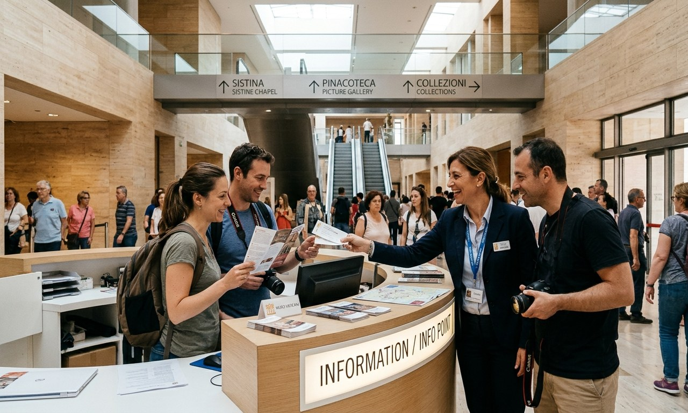

Vatican Museums Visitor Guide 2026: Everything You Must Know Before You Go

The Vatican Museums house the world's largest privately-owned art collection: 54 galleries across 7 kilometers of corridors, 70,000 works of art, and the most famous ceiling in human history. Visiting without a plan means wandering the longest queue in Europe before getting lost in a labyrinth of Renaissance masterpieces. This complete 2026 guide tells you which rooms to prioritize, when to arrive, what is strictly off-limits, and how to see the Sistine Chapel in relative peace - a feat that 99% of visitors fail to achieve.
📋 Complete Visitor Contents
- What Are the Vatican Museums?
- 5 Absolute Must-See Highlights (Don't Miss These)
- Sistine Chapel: How to Actually Appreciate It
- 2026 Ticket Prices & Skip-the-Line Options
- Opening Hours, Closed Days & Free Sunday Rules
- Dress Code: What You Cannot Wear (Strictly Enforced)
- Best Time to Visit: When Crowds Thin Out
- Practical Info: Bags, Food, Photography & Accessibility
- Vatican Museums FAQs (Questions Real Visitors Ask)
What Are the Vatican Museums?
The Vatican Museums (Musei Vaticani) are not a single museum but a complex of interconnected papal palaces, chapels, and galleries assembled by the Catholic Church since the 15th century. Pope Julius II began the collection in 1503 when he moved Michelangelo's Laocoön and His Sons from private Roman hands into public papal display.
Today the collection spans ancient Egyptian artifacts, Etruscan ceramics, Greek and Roman sculpture, medieval manuscripts, Renaissance paintings, and 20th-century religious art - all housed within the 44-hectare Vatican City State, the world's smallest sovereign nation.
5 Absolute Must-See Highlights
Sistine Chapel
Michelangelo's ceiling (1508–1512) and The Last Judgment altar wall (1536–1541). The defining masterpiece of Western religious art. Allow 20 silent minutes here.
Raphael Rooms (Stanze di Raffaello)
Four rooms painted by Raphael 1508–1524. The School of Athens in the Room of the Signature is one of the most analyzed paintings in history.
Gallery of Maps
A 120-metre corridor painted with 40 topographic maps of Italian regions, completed 1580–1583. Stunning perspective art and historical geography combined.
Laocoön & His Sons
The Hellenistic marble masterpiece (c. 200 BC) depicting a Trojan priest strangled by sea serpents. Considered by Pliny the Elder as the greatest sculpture ever made.
Museo Pio-Clementino
Home to the Apollo Belvedere, the Belvedere Torso, and dozens of imperial Roman portrait busts from the 1st–3rd centuries AD.
Egyptian Museum
One of Europe's oldest Egyptology collections, featuring mummies, canopic jars, and hieroglyphic sarcophagi acquired by Pope Gregory XVI in 1839.
Sistine Chapel: How to Actually Appreciate It
Every year, 5 million visitors pack into a room measuring only 40 meters long and 13 meters wide, craning their necks upward at Michelangelo's ceiling while Swiss Guards shout "Silenzio!" into the crowd. Most people leave underwhelmed because they were overwhelmed.
Here is how to do it properly:
- Do NOT rush straight to it first: Counterintuitively, visiting the Raphael Rooms before the Sistine Chapel deepens your experience immensely. Raphael and Michelangelo were rivals working simultaneously in adjacent buildings during Pope Julius II's reign. Understanding this rivalry transforms the Sistine from "a famous ceiling" into a documented artistic competition.
- Arrive when the Chapel opens at 9:00 AM: The first 30 minutes are the calmest of the entire day. By 10:30 AM, the room is at maximum capacity.
- Sit on the benches along the walls: Most visitors stand in the middle looking up. The stone benches along the perimeter let you recline your head at a sustainable angle for 15–20 minutes of proper contemplation.
- Photography: Photography without flash is permitted inside the Sistine Chapel (the no-photography rule was quietly lifted years ago despite persistent signs and guard instructions claiming otherwise).
✨ The Ceiling at a Glance: Key Panels to Identify
Michelangelo divided the barrel vault into nine central Genesis scenes. The three you must identify: The Creation of Adam (God extends a finger to a reclining Adam - the most reproduced detail), The Separation of Light from Darkness (the first panel, directly above the altar), and The Flood (crowded with hundreds of tiny figures escaping rising water). Below the central scenes run alternating ignudi (nude athletic youths) and medallion frames. In the corner spandrels are dramatic Old Testament rescue scenes (David beheading Goliath, Judith with Holofernes).
2026 Ticket Prices & Skip-the-Line Options
| Ticket Type | Price 2026 | Includes | Best For |
|---|---|---|---|
| Standard Online Ticket | €20 / adult | Full museum self-guided access (no guide) | Budget-conscious, repeat visitors |
| Skip-the-Line Entry | €29–€45 / adult | Priority queue bypass + timed entry slot | Avoiding the 90-min standard queue |
| Guided Group Tour | €59–€89 / adult | Expert historian + headsets + timed skip-line | First-timers wanting full context |
| Early Access VIP (8 AM) | €85–€120 / adult | Pre-opening entry, uncrowded Sistine Chapel | Photographers, honeymoon couples |
| Last Sunday (Free) | Free | Standard museum access (no booking needed) | Only if you arrive before 6:00 AM |
Opening Hours, Closed Days & Free Sunday
| Day | Opening Hours | Notes |
|---|---|---|
| Monday–Saturday | 9:00 AM – 6:00 PM | Last entry 4:00 PM |
| Sundays (most) | Closed | Regular Sundays: museums closed to public |
| Last Sunday of Month | 9:00 AM – 2:00 PM | Free admission; extremely crowded |
| Public Holidays | Closed | Jan 1, Jan 6, Feb 11, Mar 19, Apr 23, Easter Monday, Apr 29, Jun 29, Aug 15, Nov 1, Dec 8, Dec 25–26 |
Dress Code: What You Cannot Wear
The Vatican City State enforces a strict modesty dress code at all entry points. Swiss Guards and lay security staff refuse entry to visitors in inappropriate attire. This applies to all visitors regardless of religion or nationality.
⚠️ Dress Code Violations = Denied Entry (No Refund)
If you arrive wearing prohibited clothing and cannot cover up, you will be refused entry without a refund. Pack a scarf or lightweight layer before leaving your hotel.
- Prohibited for ALL visitors: Sleeveless tops and vests (shoulders must be covered), shorts or skirts above the knee, low-cut necklines, ripped or offensive clothing, flip-flops inside St. Peter's Basilica
- Quick fix if you forget: Lightweight scarves (women) or long-sleeved over-shirts (men) can be draped to cover shoulders and knees. These are sold by street vendors outside the walls for €5–€8.
- Children under 6: No dress code applies to very young children in strollers.
Best Time to Visit: When Crowds Actually Thin Out
- Best time of day: 9:00–10:00 AM and after 4:00 PM (last hour before closing). Avoid 11:00 AM–3:00 PM when all group tours converge.
- Best day of week: Wednesday mornings - the Pope holds a General Audience in St. Peter's Square, temporarily diverting crowds away from the Museums.
- Best months: November, January (excluding Christmas week), and February offer the quietest Vatican experience. October and March are good shoulder season options.
- Worst times: Last Sunday of each month (free admission = 6-hour queues), Easter week, July–August, and any papal event week.
Practical Info: Bags, Food, Photography & Accessibility
Luggage & Bag Rules
All bags go through airport-style X-ray security. Bags larger than 40×35×15cm must be checked at the cloakroom (free). Prohibited items include tripods, selfie sticks, professional camera lenses longer than 15cm, and any sharp objects.
Food & Drink Inside
A café and self-service restaurant are located in the museum complex (accessible to ticket holders only). Outside food is technically not permitted inside galleries, though small water bottles in sealed bags are generally overlooked. No food is permitted inside the Sistine Chapel under any circumstances.
Accessibility
The Vatican Museums are reasonably accessible, with elevators at key transition points and wide corridor paths accommodating wheelchairs. Strollers are permitted in most areas except the Sistine Chapel (too crowded). Request accessibility assistance when booking tickets online.
Vatican Museums FAQs
How long does it take to see the Vatican Museums properly?
A focused visit covering the main highlights (Raphael Rooms, Gallery of Maps, Sistine Chapel) takes a minimum of 2.5 to 3 hours. A thorough visit of all 54 galleries takes a full day. Most visitors spend 3 to 4 hours total.
Is St. Peter's Basilica included in the Vatican Museums ticket?
No. St. Peter's Basilica is a separate, free-entry site managed by the Vatican Chapter. Guided Vatican Museum tours typically include a transition walk-through of the Basilica, but standalone museum tickets do not include Basilica access.
Can children enter the Vatican Museums?
Yes. Children under 6 enter free. The museums are generally stroller-friendly except in the Sistine Chapel. Guided family tours with child-focused storytelling are available and highly recommended for children aged 6 to 14.
Is there a left-luggage storage at the Vatican Museums?
Yes. A free cloakroom is available near the main entrance for oversized bags, luggage, and umbrellas. Lockers require a €1 coin deposit (refunded when emptied).